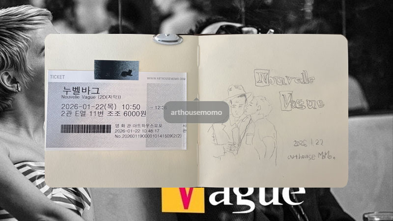

누벨바그, Nouvelle Vague
2025 | 드라마 | 감독 리처드 링클레이터 | 출연 기욤 마르벡

NOTE
15년 전, 프랑스문화원에서 불어를 배웠다. 지금은 자리를 옮겼지만 당시 부산 초량에 위치한 프랑스문화원은 내가 배우고 있는 언어에 대한 자긍심을 최대한으로 끌어올려주기에 아주 완벽했던 곳이었다. 낡은 빌딩 1층, 비가 오면 공간 전체에 짙게 깔리던 먼지 덮힌 책 냄새, 높은 천고와 큰 창, 손이 많이 닿아 닳을 데로 닳은 서적들, 푹-꺼진 소파, 크고 검은 라디오 카세트 .. 시간과 함께 나이가 든 모든 사물들이ㅡ공기마저도ㅡ 나에게 ‘마음을 좀 편하게 가져도 돼’라고 말해주는 곳이었다. 수업이 없는 날이면, 캄캄한 교실에서 DVD를 보고 오곤 했는데, 그때 보았던 영화들의 대부분이 누벨바그 사조의 작품들이었다. 불어를 열심히 배우다보면 나도 언젠가는 그들처럼 말하고 생각하며 삶을 향유하겠지, 그런 희망을 품고 또 품었다.
링클레이터 감독의 <누벨바그>를 보는 내내 코 끝에 머물렀던 프랑스문화원의 쾌쾌한 냄새 때문이라도 이 영화를 계속, 무한하게, 반복 관람하고 싶어졌다.
아무나 붙잡고 내가 좋아하는 걸 같이 좋아할래요, 말하며 보여주고 싶은 영화가 또 하나 생겼다. 어쩌면 이토록 맛있게, 멋있게, 눈물나게 아름답게, 이 모든 걸 재현할 수 있는거지. 나는 이 감상의 감격조차도 글로 다 표현하지 못하는데.
Quote